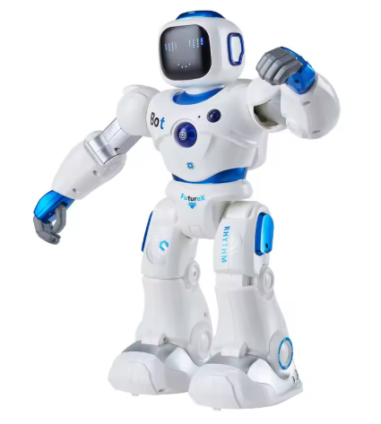
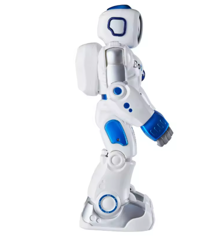
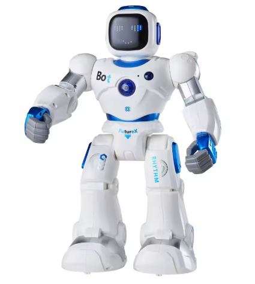

AstroBot es mucho más que un juguete. Conversa, aprende y juega contigo gracias a su IA avanzada.
Responde preguntas y mantiene conversaciones fluidas.
Conoce tus gustos y evoluciona con el tiempo.
Se mueve y reacciona a su entorno.


